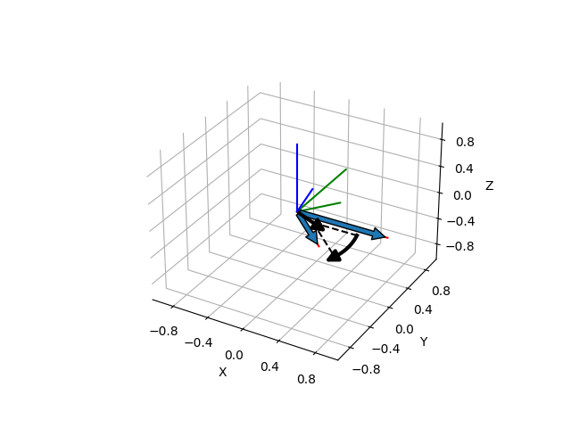

Note
Go to the end to download the full example code.
Axis-Angle Representation from Two Direction Vectors#
This example shows how we can compute the axis-angle representation of a rotation that transforms a direction given by a vector ‘a’ to a direction given by a vector ‘b’. We show both vectors, the rotation about the rotation axis and the initial and resulting coordinate frame, where the vector ‘b’ and its corresponding frame after the rotation are represented by shorter lines.
import numpy as np
import matplotlib.pyplot as plt
from pytransform3d.rotations import (
axis_angle_from_two_directions, matrix_from_axis_angle, plot_axis_angle,
plot_basis)
from pytransform3d.plot_utils import make_3d_axis, plot_vector
a = np.array([1.0, 0.0, 0.0])
b = np.array([0.76958075, -0.49039301, -0.40897453])
aa = axis_angle_from_two_directions(a, b)
ax = make_3d_axis(ax_s=1)
plot_vector(ax, start=np.zeros(3), direction=a, s=1.0)
plot_vector(ax, start=np.zeros(3), direction=b, s=0.5)
plot_axis_angle(ax, aa)
plot_basis(ax)
plot_basis(ax, R=matrix_from_axis_angle(aa), s=0.5)
plt.show()
Total running time of the script: (0 minutes 0.065 seconds)